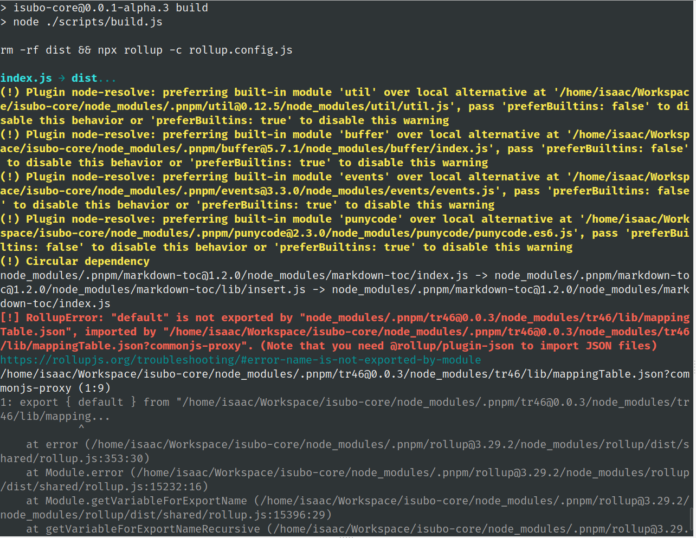
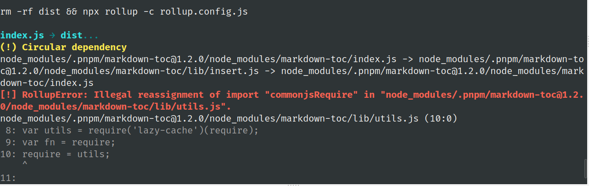

Rollup - ESM 转 CJS
主题：将一个 ESM 语法实现的 NodeJS 包转化为 CJS 模块语法的包。
最终目的：不单只是将内容转化为 CJS 模块语法，需要连带所依赖的第三方包一并转化。保证在 CJS 语境下有效运行！
package.json中使用type字段强制指定为module，以方便在.js文件中使用 ESM 模块语法。包的内容使用 ESM 模块语法，推测部分依赖包也是仅仅支持 ESM 语法。
Rollup 有几个插件组成之后，他们支持将 ESM 转化为 CJS。但是就目前观察的情况来看，仅仅支持将包内容转化，对依赖暂无解法。有待深入研究。
esm转cjs的探索
1 | import resolve from '@rollup/plugin-node-resolve'; |
出现的问题：

先尝试解决 warning：preferBuiltins。从 chatgpt 查阅 node-resolve 的这个属性。
在使用@rollup/plugin-node-resolve插件时，你可以使用preferBuiltins选项来指定哪些模块应该优先使用 Node.js 内置的模块。
preferBuiltins选项接受一个布尔值或一个对象，用于配置内置模块的优先级。以下是一些常见的用法：
使用布尔值：
preferBuiltins: true：表示所有内置模块都优先使用。preferBuiltins: false：表示所有内置模块都不优先使用。
使用对象：
preferBuiltins: { moduleA: true, moduleB: false }：表示只有指定的模块（moduleA）会优先使用内置模块，而其他模块（moduleB）不会优先使用。
这样，当引入第三方包时，@rollup/plugin-node-resolve插件会根据配置的preferBuiltins选项来决定是否优先使用内置模块。如果指定的模块在 Node.js 中存在内置实现，插件将尝试使用内置模块，而不是将其打包到最终的输出中。
例如，以下是使用@rollup/plugin-node-resolve插件的示例配置，其中指定了某个模块（例如fs）优先使用内置模块：
1 | import resolve from '@rollup/plugin-node-resolve'; |
在这个示例中，如果第三方包中导入了fs模块，@rollup/plugin-node-resolve插件将尝试使用 Node.js 中的内置fs模块，而不是将其打包到输出中。
请注意，preferBuiltins选项只会在使用@rollup/plugin-node-resolve插件时起作用，对其他插件或工具没有影响。
添加以下修改：
1 | plugins: [ |
warning 消失！
尝试解决错误（@rollup/plugin-json）引发的问题
下面是 chatgpt 给出的解决方案：
根据错误提示，你需要使用@rollup/plugin-json插件来处理导入的JSON文件。该插件允许你在Rollup中导入和处理JSON模块。
请按照以下步骤进行配置：
安装
@rollup/plugin-json插件：1
npm install --save-dev @rollup/plugin-json
在你的Rollup配置文件中引入和使用
@rollup/plugin-json插件：1
2
3
4
5
6
7
8
9
10
11
12
13
14
15
16
17
18import resolve from '@rollup/plugin-node-resolve';
import commonjs from '@rollup/plugin-commonjs';
import json from '@rollup/plugin-json';
export default {
input: {
index: 'index.js',
},
output: {
dir: 'dist',
format: 'cjs'
},
plugins: [
resolve(),
commonjs(),
json() // Add the json() plugin here
]
};
通过添加json()插件，Rollup将能够正确处理导入的JSON模块，并解决你遇到的错误。重新运行打包命令后，应该能够成功地打包你的项目。
在添加 json 插件后，json 问题已经解决。但是出现了新的编译错误！

暂时无法解决 markdown-toc 导致的问题，而且它本身也是使用cjs实现，因此暂时将它排除在外。
添加 resolve、commonjs 插件成功编译后，第三方包被编译进包内容中。